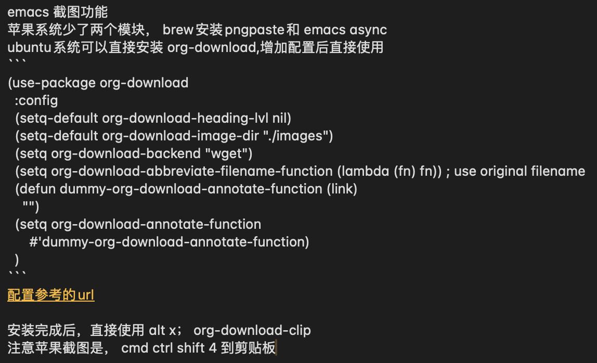

Table of Contents
1. emacs magit,org-mod
好久没有更新了，今年看能坚持多久！
1.1. magit使用
- 此处需要梯子，否则安装很麻烦
ps: 经过测试，发现如下配置也可以安装，修改源
(setq package-check-signature nil)
(setq package-archives
'(("gnu" . "https://elpa.gnu.org/packages/")
("melpa" . "https://melpa.org/packages/")))
快速唤出方式 mysrc + tab 键
- 进入magit界面，按以下键：
s：add 增加 cc：commit 添加注释 ctrl c + ctrl c ：确认提交 P p：push推送到远程 帮助信息：ctrl h,m
L head , 空格查看，光标不移动；回车查看，光标移动
1.2. magit 常用命令
magit-status 绑定的命令：ctrl x g s stage;u unstage c , c commit 推送 push为 P,u 即可完成远程仓库的推送
magit-find-file,我们可以比如绑定到C-x m f,它可以指定访问某个分支中某个文件，且是放到一个临时的 buffer，只能说极其好用
h 显示帮助命令 magit使用的文档，日文版本的，感觉还不错 https://joppot.info/posts/f2721fb2-0942-4c4e-90e2-0dbdbb329bce
1.3. emacs基本使用
- 显示文件夹后，在另外窗口打开文件
ctrl x 4 b ctrl x f ctrl o，焦点不过去
- 复制文本内容
ctrl shift @，选择文本内容 ctrl w 剪切，cmd w 复制 ctrl y 粘贴
- 链接
C-c C-l 编辑链接（此处为小写L） C-c C-o 打开链接（相当有用）
具体怎么改你得看org-structure-template-alist的文档（C-h v org-structure-template-alist）
- 滚动屏幕
滚动另外一个窗口的屏幕向下/向上 ctrl cmd v/ctrl shift cmd v
1.4. dired文件夹模式
- 选中文件后，在另外窗口打开，直接 按 o 即可; f 直接在当前缓冲区查看文件
- 焦点不过去，直接查看， ctrl o
- 查看帮助命令，h
- 快速查看blame
- git blame
比如我要看当前区域的代码是 who/which commit 提交的。这种都是临时性的需求，因此它是通过特殊 command(C-c M-g b) 以开关的形式操作的（不然看起来太乱了）
= 比较文件 v 查看文件 D 删除文件 C 拷贝 R 重命名 Z 压缩 w 复制文件名 m 标记 u 取消标记
- 新建目录
C-c * 将本行设置为标题/正文
cmd shift &; 异步执行程序 cmd shift ！；执行程序，命令行比较少
1.5. org-mod
1.5.1. org文件导出为html文件
- org导出html文件
- 编辑完org，要导出ctrl c，ctrl e ，h导出html文件
- 执行sh mvhtml2post.sh
1.5.2. 列表和checkbox使用
- cmd shift ret – checkbox
[0/1][ ][100%][X]
- 改变状态方法，ctrl c,ctrl c
- todo ctrl shift ret
1.5.3. 其它：
- cmd 左右，升级降级标题
- 上线两个列表交换位置，cmd shift 上/下
- 循环改变标志符号 ctrl c -
ppp4. 标题间跳转
- C-c C-n 下个标题
- C-c C-p 上个标题
- C-c C-f 下个同级的标题
- C-c C-b 上个同级的标题
- C-c C-u 回到上层标题
1.6. 标签搜索
建立好了tag系统，可以将相关信息收集到一个表中
C-c / m 或 C-c \ 标准检索， 按照tag进行检索 C-c a m 按标签搜索多个文件 需要把文件加入全局agenda
1.7. yasnippet
支持新建templage ctrl c & ctrl n
1.8. eww文本浏览器
- eww 提示输入浏览网址
- G 重新输入并载入网址
- g 重载
- b/B 添加/显示书签
- & 外部浏览器打开url
- q 退出
- l/r 后退/前进
- >/< 文件末尾和开头
- w 拷贝文章url
- S list
- s switch buffer
- cmd ret 创建新buffer
1.9. vim emacs 快捷键比较
oemacs 与 vim 命令对比(网上摘录)
-----------------------------------------------------------------
exit: C-x C-c :qa /:wq /:xa /:q!
Get back/command mode: C-g <esc>
Backward(left): C-b h
Forward(right): C-f l
Next(down): C-n j
Previous(up): C-p k
stArt of line(^): C-a 0
End of line($): C-e $
mUltiple commands: C-u nnn cmd nnn cmd
Multiple commands: M-digitkey cmd
save File: C-x C-s :w
beginning of buffer: M-< 1G
end of buffer: M-> G
*scroll forward 1 screen*: C-v ^F
scroll forward 1/2 screen: ^D
scroll forward 1 line: ^E
*scroll backward 1 screen*: M-v ^B
scroll backward 1/2 screen: ^U
scroll backward 1 line: ^Y
scroll the other window: M-C-v
delete under cursor: C-d x
delete from cursor to eol: C-k D
iSearch forward: C-s
isearch Reverse: C-r
Search forward: C-s enter /
search Reverse: C-r enter ?
isearch regexp: M-C-s
isearch backward regexp: M-C-r
search regexp: M-C-s enter /
search backward regexp: M-C-r enter ?
Help: C-h C-h :help
Help Apropos: C-h a
Help key Bindings: C-h b :help [key]
Help Info: C-h i
Help Major mode: C-h m
Help tutorial: C-h t :help howto
Undo: C-_ u
Redo: C-f ^R
Mark cursor position: C-x r SPC m{a-zA-Z}
eXchange Mark and position: C-x C-x
goto mark in current file: C-x r j '{a-z}
goto mark in any file: '{A-Z}
*copy region*: M-w {visual}y
kill region: C-w {visual}d
*Yank and keep buffer*: C-y
Yank from kill buffer: M-y p
convert region to Upper: C-x C-u {visual}U
convert region to Lower: C-x C-l {visual}u
Insert special char: C-q octalnum/keystroke
^V decimal/keystroke
*replace*: M-x replace-string :%s/aaa/bbb/g
replace regexp: M-x replace-regexp :%s/aaa/bbb/g
query replace: M-% :%s/aaa/bbb/gc
query replace: M-x query-replace
query replace regexp: M-x query-replace-regexp
Open file: C-x C-f :r file
Save file: C-x C-s :w
Save all buffers: C-x s :wa
Save as: C-x C-w file :w file
Prompt for buffer: C-x b
List buffers: C-x C-b :buffers
Toggle read-only: C-x C-q :set ro
Prompt and kill buffer: C-x k
Split vertical: C-x 2 :split
Split horizontal: C-x 3 :vsplit (ver. 6)
Move to other window: C-x o ^Wp
Delete this window: C-x 0 :q
Delete other window(s): C-x 1 ^Wo
run shell in bg: M-x compile
kill shell run in bg: M-x kill-compilation
run make: :make Makefile
check error message: C-x` :echo errmsg
run shell and record: M-x shell :!script -a tmp
...clean BS, ... :!col -b <tmp >record
...save/recall shell record: C-x C-w record :r record
run shell: M-! sh :sh
run command: M-! cmd :!cmd
run command and insert: C-u M-! cmd :r!cmd
run filter: M-| file {visual}:w file
run filter and insert: C-u M-| filter {visual}:!filter
show option :se[t] {option}?
reset option to default :se[t] {option}&
reset boolean option :se[t] no{option}
toggle boolean option :se[t] inv{option}
wrap text at column 72 :se tw=72
do not wrap :se tw=0
autoindent :se ai
expand tab :se et
————————————————
版权声明：本文为博主原创文章，遵循 CC 4.0 BY-SA 版权协议，转载请附上原文出处链接和本声明。
原文链接：https://blog.csdn.net/hejinjing_tom_com/article/details/51700911
1.10. 安装自定义的theme
github下载文件，zenburn-theme.el
(add-to-list 'custom-theme-load-path "~/.emacs.d/themes/") (load-theme 'zenburn t)
1.11. 如何设计并实现一个百万并发的服务端程序架构
1.12. emacs快速粘贴图片到org文件中
